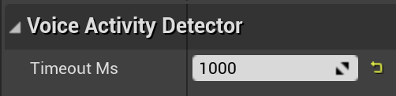

Glossary
The speech processing application consists of 3 components:
- Speech processor
- Language model provider
- Speech source
Speech Processor
Speech processor receives the audio data from the speech source and decodes it using the language model provided by the language model provider. Further actions are determined by the algorithm used (for example, speech recognition, voice control or voice activity detection). Speech source and language model provider are called speech processor dependencies.
Speech Source
Speech source provides speech data. Recognissimo supports single-channel PCM audio at 16kHz and higher sampling rates.
Language Model Provider
Language model provider provides a language model - a set of files that are used by the speech processor to convert speech data to text. Recognissimo uses Vosk language models.
Components overview
Recognissimo currently includes the following components:
- ContentLanguageModelProvider - provides language models stored in the Content directory.
- SubmixSpeechSource - streams audio data from the sound submix.
- SpeechRecognizer - speech processor which outputs a detailed description of the recognized text.
- VoiceControl - speech processor that calls events tied to certain phrases.
- VoiceActivityDetector - speech processor that notifies about changes in the state of voice activity.
Preparations
Install language models
Before using ContentLanguageModelProvider component:
- Create directory LanguageModels in your Content directory where language models will be stored.
- Add Content/LanguageModels to Additional Non-Asset Directories To Copy list in your project packaging settings.
- Add language models:
- download language models for the languages you plan to support from here
- unpack each model into Content/LanguageModels directory and give it a pretty name (for example, en for English language model).
Microphone input
To use microphone audio input:
- Add AudioCapture component to the scene.
- Set base submix for AudioCapture.
- To mute submix in the scene, connect it to another submix with Output Volume set to zero linear gain or -96 dB.
- To request microphone permissions at runtime, use node Request Microphone Permission from Recognissimo/Utils.
- Start AudioCapture component.
Setup components
- Create new Actor class and add instance of this class to the scene.
Setup ContentLanguageModelProvider
- Add ContentLanguageModelProvider component to your actor.
- Specify which language models the component has:
Setup SubmixSpeechSource
- Add SubmixSpeechSource component to your actor.
- Specify sound submix which audio data will be streamed. If submix is not specified, master submix will be used.
Setup SpeechRecognizer
- Add SpeechRecognizer component to your actor.
- Optionally setup vocabulary (more infrormation here).
- Optionally specify whether speech recognizer should output a detailed result description with a breakdown by words and timestamps.
- Optionally specify whether speech recognizer should output alternative results:
- Connect On Partial Result Ready and On Result Ready events to handlers.
Setup VoiceControl
- Add VoiceControl component to your actor.
- Specify voice commands.
- Optionally specify whether ASAP mode enabled (e.g. whether VoiceControl will use preliminary recognition results to detect voice command):
Setup VoiceActivityDetector
- Add VoiceActivityDetector component to your actor.
- Optionally specify timeout (in ms) during which a change in voice activity does not trigger an event:

- Connect On Voice Activity Status Changed event to handler.
Run
- To start speech processing, call Start Processing node.
- To stop speech processing, call Stop Processing node.
- To handle speech processor events, connect events On Started, On Finished and On Failed to handlers.
Advanced
How to use vocabulary
This feature may not be supported by some language models.
Vocabulary is a list of words available for speech recognizer. It is used to:
- simplify the recognition process by limiting the list of available words
- make speech recognizer output more predictable
- remove homophones
However, as the vocabulary definition implies, the speech recognition engine will try to match each spoken word with a word from the vocabulary, which is usually undesirable. To avoid this behavior, use the special word "[unk]" which means "unknown word". Then every spoken word that cannot be recognized with the existing dictionary will be marked as "[unk]" in the resulting string.
The order of the words doesn't matter. You can also use single string or multiple strings to describe the vocabulary. For example, the next vocabularies are the same:
How to use regular expressions in VoiceContol commands
VoiceControl supports regex patterns in phrases.
Note that Recognissimo doesn't support patterns with multiple spaces.
- Use "|" to separate phrases
- Use more complex syntax.
Voice Control will trigger the event when the user says turn on the light, turn off the light, turn on light or turn off light
 1.9.5
1.9.5